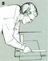

5) Cut a new pane of glass slightly smaller than the frame opening. You can make a glass-cutting jig by attaching a strip of hardwood to a plywood sheet. Use it by positioning the glass and a rafter square against the strip; make a single stroke against one leg of the square with the glass cutter, then move the scored line to the edge of the plywood and tap the line to break the glass cleanly.